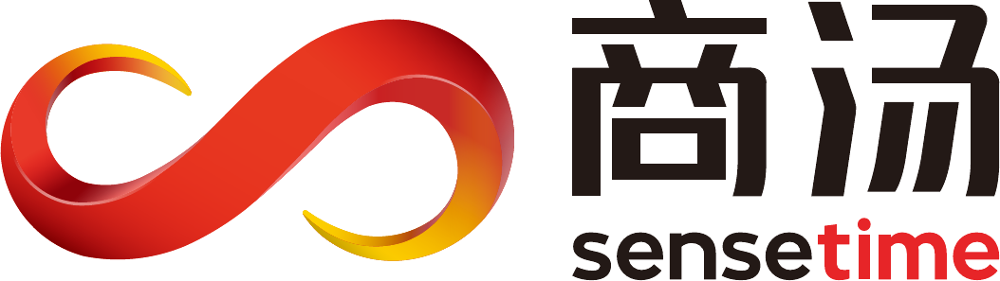

证据链评估报告
AI 招聘专员 / 招聘工作台 / 面试评估
演示环境 · 数据为虚构示意HR
✓一面 · 技术基础王梓航 · 3.9/5 · 已通过
2二面 · 技术深挖报告待确认
3终面 · 综合评估待安排
评分总览对齐画像卡 v3.2 胜任力维度
系统设计能力4.5
工程质量意识4.2
高并发实战4.6
协作与沟通3.8
责任心与韧性3.9
综合建议
4.2/ 5
高于岗位基准线 3.5
AI 建议：进入终面 —— 五维中三项达到「优秀」区间，协作沟通维度建议终面重点复核。
本建议仅供参考，录用决定需人工确认。
多轮串联跨轮次去重 · 避免重复提问
✓
工程质量意识 · 已充分验证
一面（王梓航）已覆盖代码评审习惯与测试策略，判定「已充分验证」，本轮自动去重、不再重复追问。
一面（王梓航）已覆盖代码评审习惯与测试策略，判定「已充分验证」，本轮自动去重、不再重复追问。
⇢
本轮追问清单完成度
5 / 6
1 条未问到，已自动带入终面追问清单。
✓
关键词组命中回放
核心词：分布式 / 高并发 / JVM 调优 / 微服务治理 均有实质性展开；加分信号「千万级 QPS 实战」已在本轮验证。
核心词：分布式 / 高并发 / JVM 调优 / 微服务治理 均有实质性展开；加分信号「千万级 QPS 实战」已在本轮验证。
逐维证据链每项结论均可回溯至录音原文 · 点击时间戳定位
▶① 系统设计能力4.5 / 5
结论：具备大型分布式系统的整体设计能力，方案取舍有明确的量化依据，非背诵式作答。
支撑陈砚秋00:14:22
「订单库拆分我们没有一步到位，先按买家维度做了逻辑分库，灰度三周确认热点分布后才做物理拆分。」
「订单库拆分我们没有一步到位，先按买家维度做了逻辑分库，灰度三周确认热点分布后才做物理拆分。」
支撑刘慕青00:19:05
「追问：如果重来一次，分库键还会选买家 ID 吗？——候选人主动给出了两种备选方案并比较了迁移成本。」
「追问：如果重来一次，分库键还会选买家 ID 吗？——候选人主动给出了两种备选方案并比较了迁移成本。」
▶② 工程质量意识4.2 / 5
一面已验证 · 本轮去重
结论：一面已充分验证（王梓航 · 4.1），本轮仅做交叉印证，未重复展开提问。
支撑陈砚秋00:23:48
「上线前我们坚持双人评审加自动化回归，核心链路的单测覆盖率红线是 80%，低于就不让合。」
「上线前我们坚持双人评审加自动化回归，核心链路的单测覆盖率红线是 80%，低于就不让合。」
支撑刘慕青00:26:10
「候选人谈到质量问题时主动提及自己引入过一次线上缺陷及其修复过程，表述坦诚。」
「候选人谈到质量问题时主动提及自己引入过一次线上缺陷及其修复过程，表述坦诚。」
▶③ 高并发实战4.6 / 5
结论：有千万级 QPS 大促场景的一线实战，对热点治理、降级预案的细节掌握到参数级。
支撑陈砚秋00:31:37
「大促峰值一千二百万 QPS，热点 key 我们用本地缓存加随机过期打散，命中率从 71% 拉到 96%。」
「大促峰值一千二百万 QPS，热点 key 我们用本地缓存加随机过期打散，命中率从 71% 拉到 96%。」
支撑陈砚秋00:35:58
「JVM 这块我们把 G1 的 MaxGCPauseMillis 从 200 调到 120，配合堆外缓存，停顿毛刺基本消掉了。」
「JVM 这块我们把 G1 的 MaxGCPauseMillis 从 200 调到 120，配合堆外缓存，停顿毛刺基本消掉了。」
▶④ 协作与沟通3.8 / 5
结论：表达清晰、能对齐技术分歧，但跨团队推进偏依赖上级协调，主动拉通动作偏少，建议终面复核。
支撑陈砚秋00:41:02
「和算法团队对接口分歧时，我先把两版方案的压测数据摆出来，用数据说话，最后按混合方案落地。」
「和算法团队对接口分歧时，我先把两版方案的压测数据摆出来，用数据说话，最后按混合方案落地。」
减分陈砚秋00:44:36
「跨部门那次链路改造，主要是我们总监出面协调的，我负责把技术方案做扎实。」——跨团队主动推进的直接证据不足。
「跨部门那次链路改造，主要是我们总监出面协调的，我负责把技术方案做扎实。」——跨团队主动推进的直接证据不足。
▶⑤ 责任心与韧性3.9 / 5
结论：对线上事故有兜底意识，复盘归因先看自身，长周期攻坚项目有完整交付记录。
支撑陈砚秋00:49:14
「那次资损事故虽然根因在下游，但拦截规则是我负责的，复盘我把自己列为第一责任人。」
「那次资损事故虽然根因在下游，但拦截规则是我负责的，复盘我把自己列为第一责任人。」
支撑刘慕青00:52:40
「谈到连续三个月的存储迁移攻坚时，候选人能完整说出每个里程碑的卡点与解法，非旁观视角。」
「谈到连续三个月的存储迁移攻坚时，候选人能完整说出每个里程碑的卡点与解法，非旁观视角。」
面前追问清单（本轮 6 条）
已问到 5未问到 1 · 带入终面
点击展开 ▾
演示数据均为虚构 · 商汤科技 · 大模型生态渠道部